이미지 차트
이미지 차트는 컬럼 차트와 동일하지만(컬럼 차트에서 사용되는 속성을 그대로 사용합니다.), 데이터 값을 세로 막대의 크기가 아니라 이미지의 크기로 표현합니다.
이미지 차트는 <ImageChart> 노드의 series 속성값에 <ImageSeries> 노드를 설정하여 생성할 수 있습니다.
표시되는 이미지가 존재하는 URL은 <ImageSeries> 노드의 <imgSource> 속성에 <ImageSourceItem> 노드로 정의합니다.
이미지 차트의 유형은 <ImageSeries> 노드의 imageDisplayType 속성과 <ImageSourceItem> 노드의 maintainAspectRatio 속성에 의해서 결정되는데 이에 대한 설명은 아래와 같습니다.
- imageDisplayType: 단일 이미지, 단일 이미지 반복, 다중 이미지를 사용할지 여부를 지정합니다.
- maintainAspectRatio: 원(Original) 이미지의 비율과 동일한 이미지를 차트에 표현할지 여부를 지정합니다.
두 속성값(imageDisplayType, maintainAspectRatio)에 의해서 생성되는 이미지 차트의 유형은 아래 표와 같이 요약할 수 있습니다.
| imageDisplayType |
maintainAspectRatio |
설명 |
예제 모습 |
| single |
True
(same ratio)
|
데이터를 단일 이미지로 표현하되 이미지 고유 사이즈는 유지하고 남는 여백은 막대를 세웁니다.
|
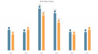
|
False
(different ratio)
|
데이터를 단일 이미지로 표현하되 이미지 고유 사이즈가 아닌 차트가 결정한 사이즈대로 표현합니다.
|
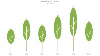
|
| singleRepeat |
True
(same ratio)
|
데이터를 단일 이미지로 표현하되 이미지 고유 사이즈는 유지하고 남는 여백은 이미지의 반복으로 처리합니다.
|
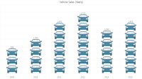
|
False
(different ratio)
|
singleRepeat 유형에서의 차등비율은 존재하지 않습니다.
|
|
| multiple |
True
(same ratio)
|
Multiple 유형에서의 차등비율은 존재하지 않습니다.
|
|
False
(different ratio)
|
데이터를 다중 이미지로 표현합니다.
각각의 이미지는 고유 값을 갖습니다. 이 값은 차트의 사이즈에 의해 계산되어 이미지로 전달됩니다.
|
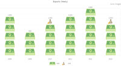
|
정배율 단일 이미지 차트
다음은 단일 이미지(<ImageSeries imageDisplayType=“single” ...>), 정배율(<ImageSourceItem maintainAspectRatio=“true” ...>) 유형의 이미지 차트를 생성하기 위한 코드와 이를 적용해서 출력한 차트의 예제입니다.
이 예제에서는 X 축과 데이터 포인트 사이의 공간에 표시되는 막대의 색에 이미지와 동일한 색을 적용하였습니다.
| 이미지 |
URL |
막대의 색 |
|
<ImageSourceItem url="../rMateChartH5/Assets/Images/woman.png"/>
|
<ImageSeries ... fill="#5587a2">
|
|
<ImageSourceItem url="../rMateChartH5/Assets/Images/man.png"/>
|
<ImageSeries ... fill="#f6a44c">
|
<ImageChart id="chart" showDataTips="true" showLabelVertically="true">
...
<series>
<ImageSeries labelPosition="outside" yField="Data1" imageDisplayType="single" styleName="seriesStyle" displayName="Man" formatter="{numFmt}" fill="#5587a2" halfWidthOffset="5" showValueLabels="[2,3]">
<imgSource>
<ImageSourceItem maintainAspectRatio="true" url="../rMateChartH5/Assets/Images/man5.png"/>
</imgSource>
...
</ImageSeries>
<ImageSeries labelPosition="outside" yField="Data2" imageDisplayType="single" styleName="seriesStyle2" displayName="Woman" formatter="{numFmt}" fill="#f6a44c" halfWidthOffset="5" showValueLabels="[2,3]">
<imgSource>
<ImageSourceItem maintainAspectRatio="true" url="../rMateChartH5/Assets/Images/woman4.png"/>
</imgSource>
...
</ImageSeries>
</series>
</ImageChart>
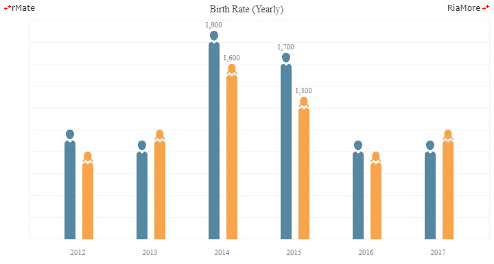
See the CodePen 알메이트 차트 - 정배율 단일 이미지 차트
다음은 정배율 단일 이미지 차트의 다른 예제입니다. 마찬가지로 X 축과 데이터 포인트 사이의 공간에 표시되는 막대의 색에 이미지와 동일한 색을 적용하였습니다.
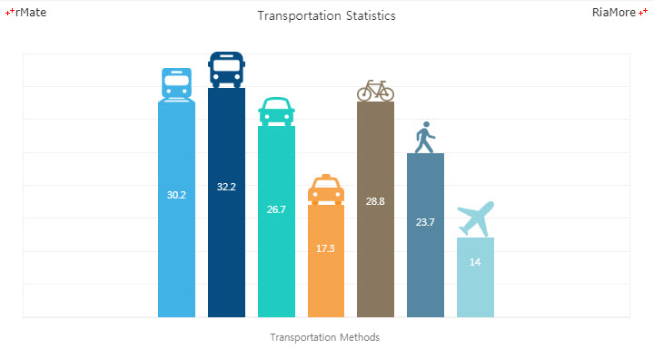
See the CodePen 알메이트 차트 - 정배율 단일 이미지 차트 (이동수단)
차등 배율 단일 이미지 차트
다음은 단일 이미지(<ImageSeries imageDisplayType=“single” ...>), 차등 배율(<ImageSourceItem maintainAspectRatio=“false” ...>) 유형의 이미지 차트를 생성하기 위한 코드와 이를 적용해서 출력한 차트의 예제입니다.
이 예제에서는 X 축과 데이터 포인트 사이의 공간에 원(Original) 이미지를 데이터 크기에 따라서 이미지의 크기를 조절하여 표현합니다.
<ImageChart id="chart" showDataTips="true" gutterLeft="20" gutterRight="20" showLabelVertically="true" columnWidthRatio="0.5">
...
<series>
<ImageSeries yField="Data1" imageDisplayType="single" labelPosition="outside" formatter="{numFmt}" color="#5587a2">
<imgSource>
<ImageSourceItem maintainAspectRatio="false" url="../rMateChartH5/Assets/Images/visit_human2.png"/>
</imgSource>
...
</ImageSeries>
</series>
</ImageChart>
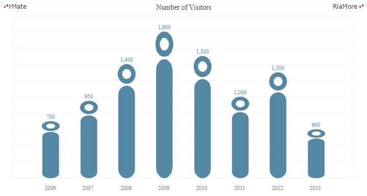
See the CodePen 알메이트 차트 - 차등 배율 단일 이미지 차트
다음은 차등 배율 단일 이미지 차트의 다른 예제입니다.
마찬가지로 X 축과 데이터 포인트 사이의 공간에 원(Original) 이미지를 데이터 크기에 따라서 이미지의 크기를 조절하여 표현하였습니다.
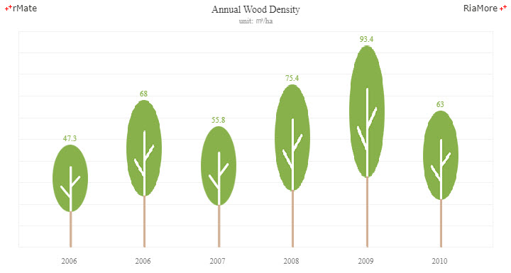
See the CodePen 알메이트 차트 - 차등 배율 단일 이미지 차트 (나무)
정배율 반복 이미지 차트
다음은 단일 이미지를 반복(<ImageSeries imageDisplayType=“singleRepeat” ...>)해서 표시하는 유형의 이미지 차트를 생성하기 위한 코드와 이를 적용해서 출력한 차트의 예제입니다.
반복 이미지 차트에서는 maintainAspectRatio 속성값에는 오직 “true” 만이 적용 가능합니다.
따라서이 예제에서는 maintainAspectRatio 속성값의 설정이 생략되었습니다.
<ImageChart id="chart" showDataTips="true" gutterLeft="20" gutterRight="20" showLabelVertically="true" columnWidthRatio="0.56">
...
<series>
<ImageSeries yField="Data1" imageDisplayType="singleRepeat" formatter="{numFmt}">
<imgSource>
<ImageSourceItem url="../rMateChartH5/Assets/Images/coin.png"/>
</imgSource>
</ImageSeries>
</series>
</ImageChart>
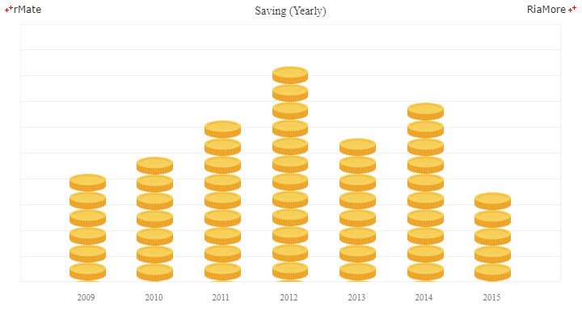
See the CodePen 알메이트 차트 - 정배율 반복 이미지 차트
다음은 정배율 반복 이미지 차트의 다른 예제입니다.
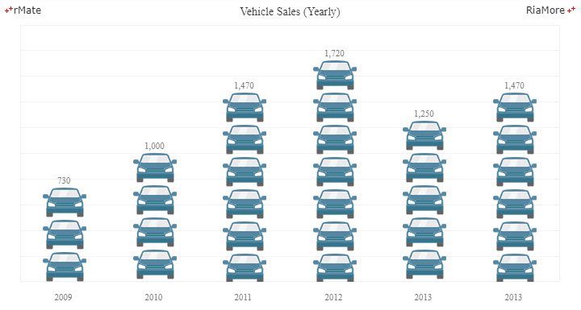
See the CodePen 알메이트 차트 - 정배율 반복 이미지 차트 (자동차)
차등 배율 다중 이미지 차트
다음은 다중 이미지를 (<ImageSeries imageDisplayType=“multiple” ...>) 차등 배율로 표시하는 유형의 이미지 차트를 생성하기 위한 코드와 이를 적용해서 출력한 차트의 예제입니다.
이 예제에서는 3 개의 이미지가 사용되었고, 각 이미지의 단위 값이 <ImageSourceItem> 노드의 value 속성에 설정되었습니다.
<ImageChart id="chart" showDataTips="true" gutterLeft="20" gutterRight="20" showLabelVertically="true">
...
<series>
<ImageSeries yField="Data1" imageDisplayType="multiple" labelPosition="outside" formatter="{numFmt}">
<imgSource>
<ImageSourceItem maintainAspectRatio="false" url="../rMateChartH5/Assets/Images/person1.png" value="100"/>
<ImageSourceItem maintainAspectRatio="false" url="../rMateChartH5/Assets/Images/person2.png" value="200"/>
<ImageSourceItem maintainAspectRatio="false" url="../rMateChartH5/Assets/Images/person3.png" value="300"/>
</imgSource>
...
</ImageSeries>
</series>
</ImageChart>
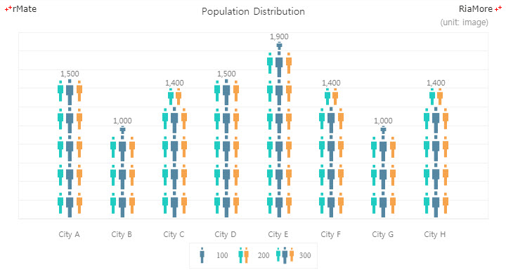
See the CodePen 알메이트 차트 - 차등 배율 다중 이미지 차트
다음은 차등 배율 다중 이미지 차트의 다른 예제입니다.
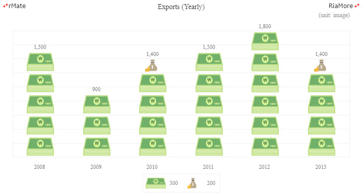
See the CodePen 알메이트 차트 - 차등 배율 다중 이미지 차트 (연도별 수출)